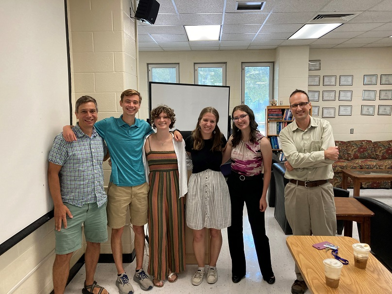

In Summer 2023 Brant Jones and I were co-mentors for one of the NSF REU projects at JMU (NSF-DMS 1950370).

Student participants in the REU were (from left-to-right above) Jacob Gathje, Izzy Pfaff, Lauren Engelthaler, and Jenna Plute.
These students did incredible work over the 8 weeks they spent at JMU. We discovered that any integer matrix in the Bose-Mesner algebra of the Johnson association scheme can be unimodularly brought into a predictable upper-triangular block form using the "Bier basis" arising from work of Wilson and Bier in the 1990s. We then can further diagonalize these blocks, and extract the Smith group of the matrix. As an application, we determined a diagonal form for the adjacency and Laplacian matrices of the Kneser and Johnson graphs on 3-subsets of an n-element set. See our paper here.
The students gave an excellent and clear talk about this for the JMU math department (slides), and also at SUMS and JMM 2024.
Back to my homepage